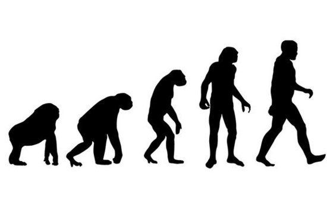

我有問題
我有問題
那一天人們回想起了孩子的教育不能等的恐怖
MrOrz, wmin0, Japie
「你有什麼問題？」

上課有問題

上課有問題
不是問題
有問題不問
就有問題
下課再問？
忘記問題在哪裡
忘記問題是什麼
問旁邊同學？
兩個人一起落進度
即時發問
很重要
上課時
老師問
「有沒有問題啊」
不問問題的原因？

怕打擾老師上課
怕只有自己有這個問題
生性害羞靦腆內向優柔寡斷
但其實大家很敢講

匿名後
會變敢問
進化

CSS
→
HTML →
 →
→

ppt （X）
web （O）
reveal.js, impress.js, deck.js ...
HTML Slides
跟教材互動（O）
跟講師互動（X）
我有問題
即時發問 ✖ 匿名 ✖ HTML Slides
http://owo.herokuapp.com/